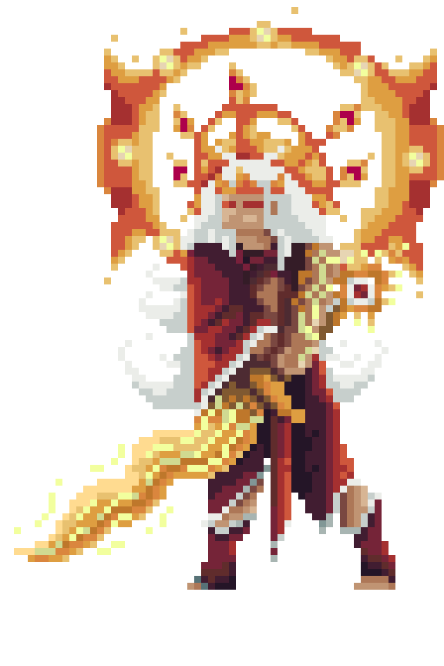

Ang Bantay ni Apolaki
Mula sa mga abo ng Daragang Magayon, umusbong ang mga Tiyanak—mga halimaw na nag-aanyong sanggol upang malinlang ang mga manlalakbay. Sila’y bumubuo ng mga kawan, at sa kanilang iyak, ipinapahamak ang kahit pinakamalakas na mandirigma. Ang kanilang biglaang anyo ng poot ay sadyang dinisenyo ni Apolaki upang subukin ang puso ng tao.
Kapre's Moveset
-
Claw Latch :
- Deals 1.2 x ATK to one enemy
-
Blood Hex :
- Deals 1.5 x ATK to single enemies.
-
Demonic Wall
- Deals 1.6 x ATK to all enemies
Mini Boss Stats
| Total HP | ATK | MAG | DEF |
|---|---|---|---|
| 1150 | 50 | 195 | 125 |
Kampon

Apolaki